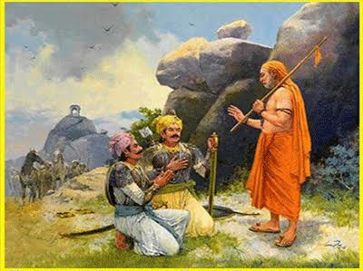
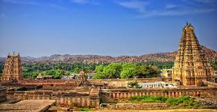

Origin of Vijayanagara Dynasty
Once upon a time, in the early 14th century, the Deccan plateau witnessed a remarkable uprising. Amidst the turmoil caused by invasions from the Delhi Sultanate, two brothers—Harihara and Bukka—stood tall. Formerly commanders of the fallen Kampili kingdom, their fate took a dramatic turn when they were captured, converted, and later reclaimed their roots with the guidance of sage Vidyaranya. In 1336 CE, they established the Vijayanagara Empire along the banks of the Tungabhadra, envisioning a citadel of dharma, culture, and resistance to foreign domination.
Dynasties of Vijayanagara Empire
The story of Vijayanagara unfolds through four powerful dynasties—each with its own legends and challenges. The Sangama Dynasty laid the groundwork. Then came the Saluva and Tuluva dynasties, whose brave kings and visionary administrators expanded and beautified the empire. The final chapter was penned by the Aravidu Dynasty, who held onto power despite overwhelming odds.
- Sangama Dynasty (1336–1485): Founded by Harihara I and Bukka Raya I
- Saluva Dynasty (1485–1505): Saluva Narasimha took power to save the empire
- Tuluva Dynasty (1505–1570): The greatest period under Krishnadevaraya
- Aravidu Dynasty (1570–1646): Last dynasty after Battle of Talikota
Chronological Timeline
- 1336: Founding of the Vijayanagara Empire
- 1509: Krishnadevaraya ascends the throne
- 1565: Battle of Talikota
- 1646: End of Aravidu Dynasty
Prominent Rulers and Their Reigns
Among the many kings who ruled Vijayanagara, few stand out like Krishnadevaraya, whose era became synonymous with prosperity, valor, and art. From his towering temples to his deep interest in literature, his reign remains the golden chapter in South Indian history. His predecessors and successors too played vital roles in shaping the destiny of the empire—each ruler a character in this grand epic.
- Harihara I (1336–1356): Founder, consolidated Tungabhadra region
- Bukka Raya I (1356–1377): Expanded empire, patronized literature
- Deva Raya I & II: Improved irrigation, military, and economy
- Krishnadevaraya (1509–1529): Golden age, built temples, promoted Telugu & Sanskrit literature, defeated Bahmani rulers and captured Raichur
- Achyuta Deva Raya: Continued policies of Krishnadevaraya
- Aliya Rama Raya: Regent and de facto ruler; died at Talikota
Architectural Achievements
The empire’s capital at Hampi sparkled like a dreamscape. Temples carved with divine artistry, musical pillars that hummed ancient tunes, and palaces that blended Indo-Islamic elegance all bore testimony to a civilization at its peak. Pilgrims, poets, and traders from across the world marveled at this magical land.
- Virupaksha Temple – active pilgrimage site even today
- Vittala Temple – famous for its Stone Chariot and musical pillars
- Hazara Rama Temple – known for Ramayana carvings
- Elephant Stables, Lotus Mahal, Stepwells – show Indo-Islamic blend
Administrative and Cultural Policies
Vijayanagara was more than a military power. It was a cultural lighthouse. The rulers established robust governance systems, ensured food security, promoted multilingual scholarship, and fostered peace across communities. Their forward-thinking policies helped transform a kingdom into an empire that became the envy of the world.
- Promoted agriculture through irrigation canals (e.g., Deva Raya’s projects)
- Encouraged trade with Persia, Portugal, and Arabia
- Patronized Hindu temples but were tolerant of Jainism and Islam
- Supported classical literature in Kannada, Telugu, Tamil, and Sanskrit
Foreign Visitors and Records
The fame of Vijayanagara traveled far. From Venice to Persia, travelers chronicled its splendor. They painted vivid pictures of markets filled with gems, parades of elephants, and towering fortresses guarding golden temples. These were not myths, but eyewitness records that astonish historians even today.
- Niccolò de' Conti (Italy): Described a rich capital with busy markets
- Abdur Razzaq (Persia): Compared Hampi to world-class cities of his time
- Domingo Paes and Fernão Nunes (Portugal): Described Vijayanagara’s vast army, festivals, and prosperity
Downfall of the Empire
Every glorious tale has a tragic end. The Battle of Talikota in 1565 marked the fall of a legend. The death of Aliya Rama Raya led to chaos. Hampi was looted, its temples destroyed, and its legacy scattered in ruins. Though the Aravidu Dynasty lingered on, the empire’s soul had been crushed—leaving behind only memories and marvels in stone.
